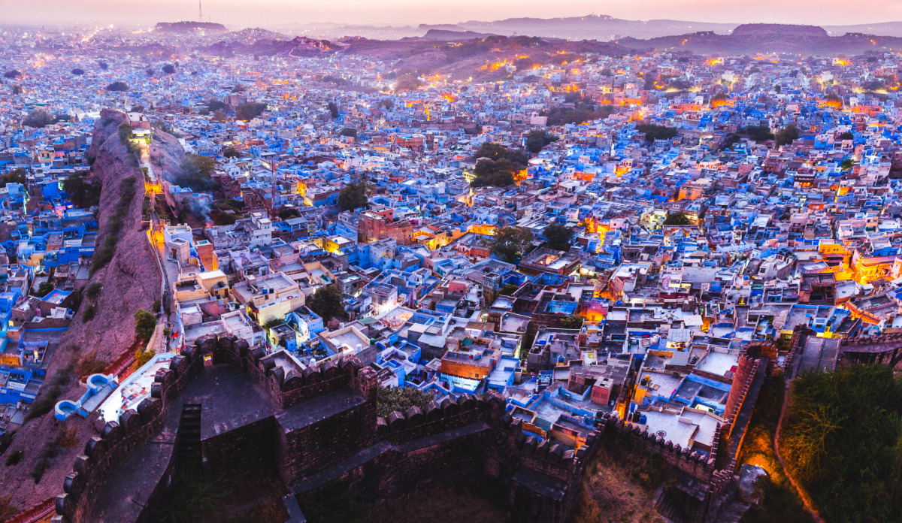

Jodhpur is beautiful in a paradoxical kind of way. Most of Jodhpur’s terrain is barren and rugged, which makes it a quintessential desert land. If you visit the old part of the city, don’t miss the blue houses, which have earned it the tag of the ‘The Blue City’.
Jodhpur is one of the largest cities of Rajasthan, offering tourists an opportunity for memorable desert safaris. One of the best safaris you can take in Jodhpur is a Bishnoi Village Safari. It takes you up, close and personal to the lives of the Bishnois, an old clan of the land.
The city is full of antiquated forts and monuments and also fascinating gardens; that attracts innumerable explorers and tourists. To escape the heat, visit Jodhpur during the winter season, which is from October to March.